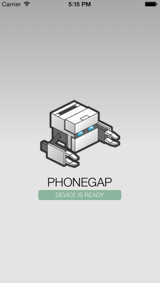
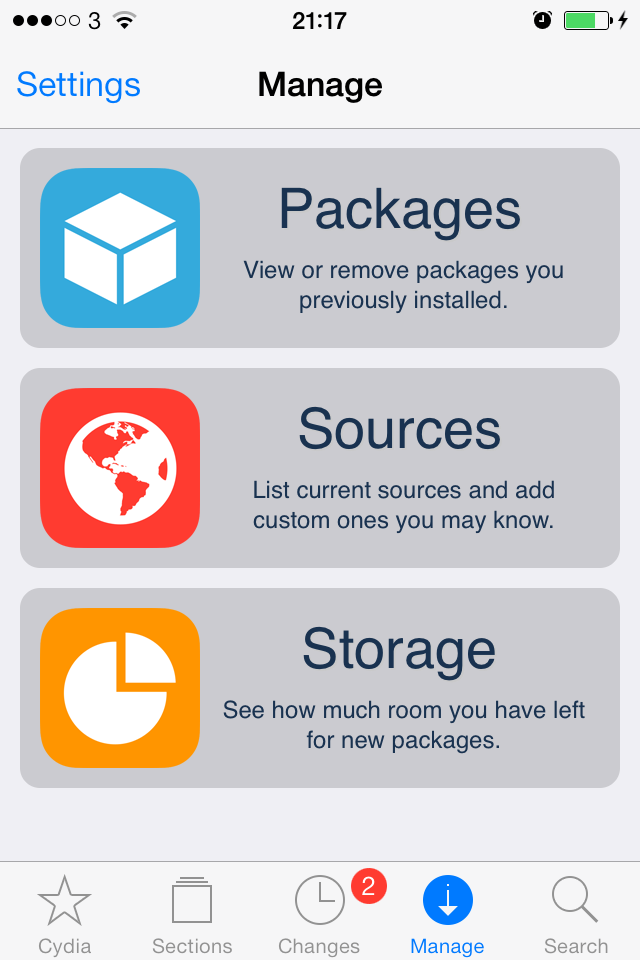
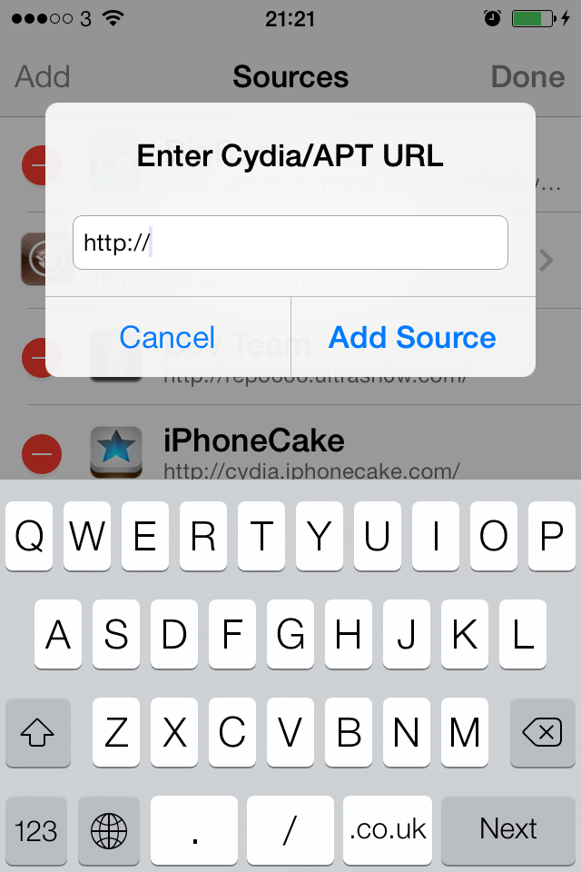
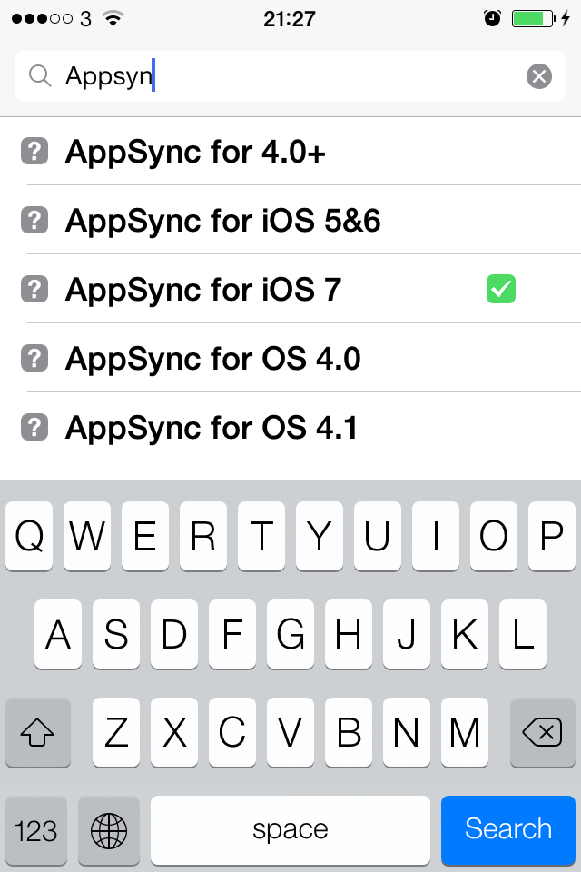
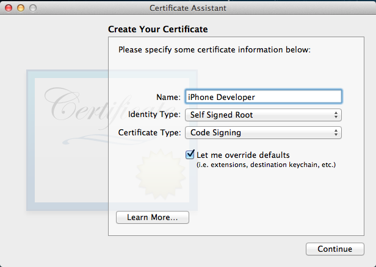

Install phone gap apps on iPhone without developer account
How to build a phone gap app and deploy to your jailbroken iphone without signing up to Apple’s 99$ developer program.
I’ve had a few idea’s recently involving geolocation and wanted to rapidly prototype them to see if they are viable. I’ve not touched objectiveC for about 4 years and didn’t really like coding in it or Xcode at the time (no doubt tooling and test infrastructure has changed dramatically since then).
Since the ideas do not have to be massively responsive, I thought I’d try out phonegap and write the code as a small webapp. In theory it allows you to write a web app in javascript and html that gets bundled for ios and android devices without having to write 2 versions. If you have a mac you can build your application and use xcode to compile and test it with xcode on an iphone simulator. However, I wanted to see how the geolocation worked on a real iphone to see whether the idea was feasible, and being me didn’t want to pay $99 until I was sure I was going to start creating ios apps.
The following steps were carried out on my Macbook running osx 10.8.5 (Mountain Lion), as far as I can tell they should also work no problem with Lion and Mavericks, with my Jailbroken iPhone 4 (7.04).
If you want to run unsigned code and not pay the $99 you will have to jailbreak your iphone. This is legal in the UK but might void your warranty.
Install xcode. The quickest way to do this is to open the app store, search for xcode and select install, at the moment this is version 5.02

Install phonegap. The latest versions have a requirement on node.js which can be either downloaded or installed using brew Open a terminal and use npm to globally install phonegap.
sudo npm install -g phonegapIf successful you should see something similar to the following
/usr/local/bin/phonegap -> /usr/local/lib/node_modules/phonegap/bin/phonegap.js phonegap@3.3.0-0.18.1 /usr/local/lib/node_modules/phonegap ├── pluralize@0.0.4 ├── colors@0.6.0-1 ├── semver@1.1.0 ├── qrcode-terminal@0.9.4 ├── optimist@0.6.0 (wordwrap@0.0.2, minimist@0.0.5) ├── shelljs@0.1.4 ├── prompt@0.2.11 (revalidator@0.1.6, pkginfo@0.3.0, read@1.0.5, utile@0.2.1, winston@0.6.2) ├── phonegap-build@0.8.4 (qrcode-terminal@0.8.0, optimist@0.3.7, shelljs@0.0.9, phonegap-build-api@0.3.3) ├── phonegap-soundwave@0.4.0 (home-dir@0.1.2, connect-inject@0.3.2, shelljs@0.2.6, request-progress@0.3.1, tar@0.1.19, node-static@0.7.0, request@2.33.0, connect@2.12.0) └── cordova@3.3.0-0.1.1 (ncallbacks@1.0.0, colors@0.6.2, open@0.0.3, mime@1.2.11, q@0.9.7, follow-redirects@0.0.3, glob@3.2.8, shelljs@0.1.2, tar@0.1.19, lodash@2.4.1, prompt@0.2.7, xcode@0.6.2, elementtree@0.1.5, request@2.22.0, express@3.0.0, npm@1.3.24, plist@0.4.3, jshint@1.1.0, ripple-emulator@0.9.18, plugman@0.17.0)Create a test phonegap application to work through any issues, where test1 is the directory that the app is created in, uk.co.spiraltechnology.test and LocationTest is the name of the app.
phonegap create test1 uk.co.spiraltechnology.test LocationTestOnce the app is created we can try and compile it for ios.
cd test1 phonegap build iosIf all goes well you will see
[phonegap] detecting iOS SDK environment... [phonegap] using the local environment [phonegap] adding the iOS platform... [phonegap] compiling iOS... [phonegap] successfully compiled iOS appIt’s now possible to run code on the iphone emulator bundled with xcode.
phonegap run ios --emulator
In order to run the application on the iphone you need to either sign up for the Apple Developer Program or Jailbreak your idevice and .
Assuming you are going for the second option we need to create a self signed certificate that xcode can sign the code with when constructing the ipa file for the iphone, and we need to make the iphone allow applications to be installed that have unofficial (self signed) certificates.
Installing AppSync for iOS 7, to allow our unsigned application to run. On the jailbroken iDevice, launch the Cydia application and press Manage, then Sources.

Next press Edit, and Add, type in the following Cydia/APT URL cydia.iphonecake.com

The iphone will warn that the repository facilitates piracy. This is because the application we are about to install allows the iphone to run unsigned code (such as the code we are about to write, and also pirated software).
Once the iphonecake source has been added, press the search icon in the bottom right hand corner and at the top of the screen type AppSync

Select the relevant one for your version of iOS (in this case the latest is for iOS 7) and install it.
Next we need to set up XCode to apply a self signed certificate to the code. Open the Keychain Access application
- Select Keychain Access > Certificate Assistant > Create A Certificate …
On the first page fill in the following
Name: iPhone Developer Identify Type: Self Signed Root Certification Type: Code Signing Select “Let me override defaults” and press continue, it will say “You are about to create a self-signed certificate.”

On the second page fill in the following Serial number: 1 Validity period : 3650
On the third page remove your email address.
- Keep pressing continue until you reach the Specify location page, press create.
- We need to update XCode to use the new certificate. The following directories are for Xcode 5.02.
Back up Xcodes plist file and convert it to xml
cd /Applications/Xcode.app/Contents/Developer/Platforms/iPhoneOS.platform sudo cp -p Info.plist Info.plist.orig sudo plutil -convert xml1 ./Info.plistReplace each occurrence of CiPhoneOSCodeSignContext with XCCodeSignContext in Info.plist
sudo sed -i .bkup 's/XCiPhoneOSCodeSignContext/XCCodeSignContext/g' ./Info.plist- Check it’s working
phonegap install iosYou will be asked if you want to allow codesign to have access to the iPhone Developer key in your keychain, say Always Allow and the app should be push onto the iphone.